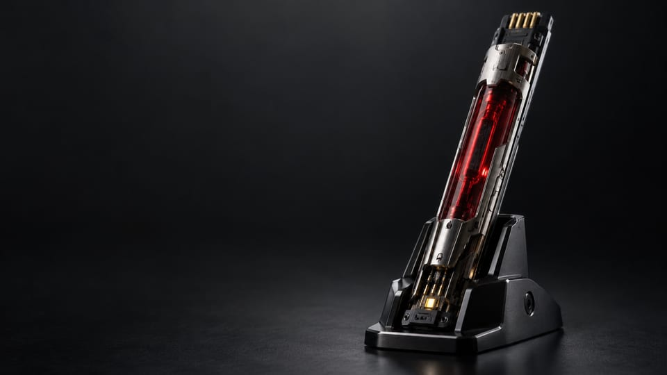

人格構築体
人格、記憶、思考パターンのデジタル表現。



Relicは、神経接続を目的とするバイオチップにデジタル人格構築体を格納します。知識、記憶、アイデンティティへの物理的な接点として、アラサカのエングラム技術を象徴します。
人格、記憶、思考パターンのデジタル表現。
保存された構築体と神経系の接続を中心に設計された、小型カートリッジ。
Relicは媒体とインターフェースです。ミコシは、より広いエングラム環境を支えるアーカイブ基盤です。
Relicの商用人格対話プログラムと、実験的な宿主移行研究は、異なる用途です。宿主移行を一般消費者向けの通常サービスとして扱うものではありません。
指導体制への復帰を受け、アラサカの継承研究はグループの長期方針の中心となりました。Relicは、個人の遺産と組織の継承が交わる場所に位置します。